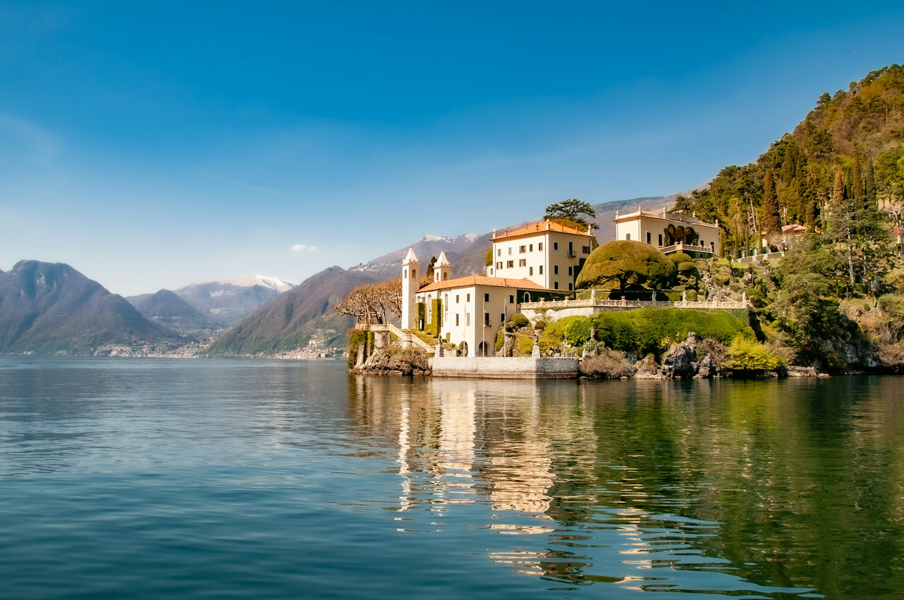
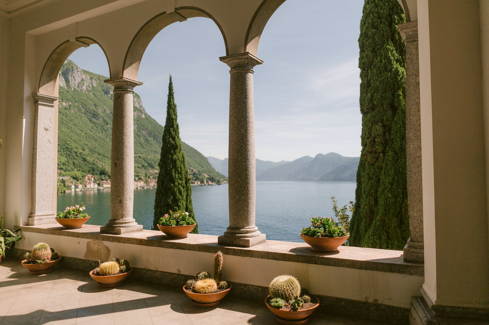
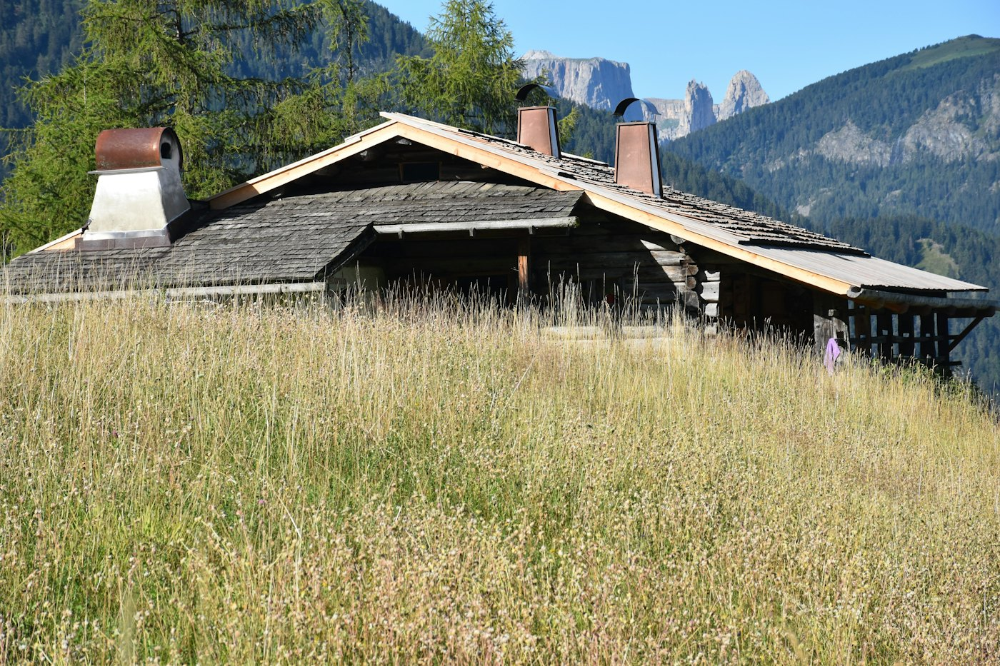
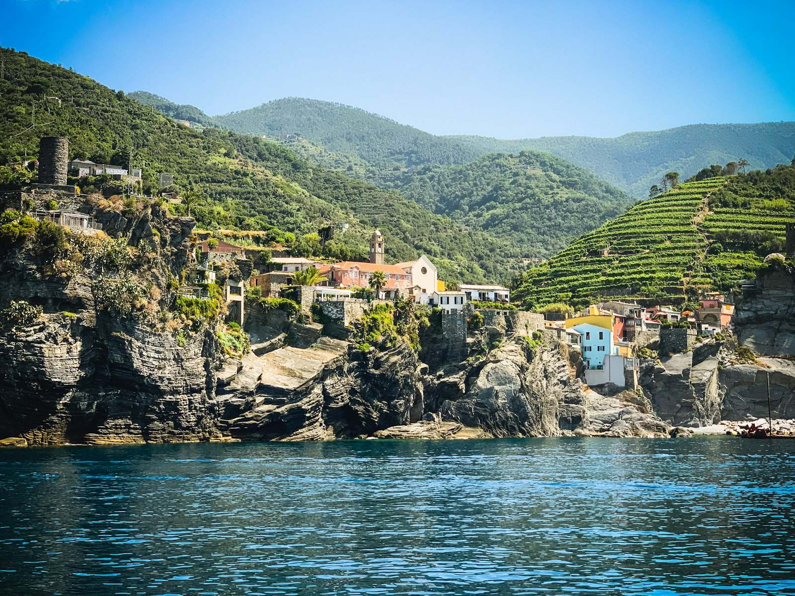
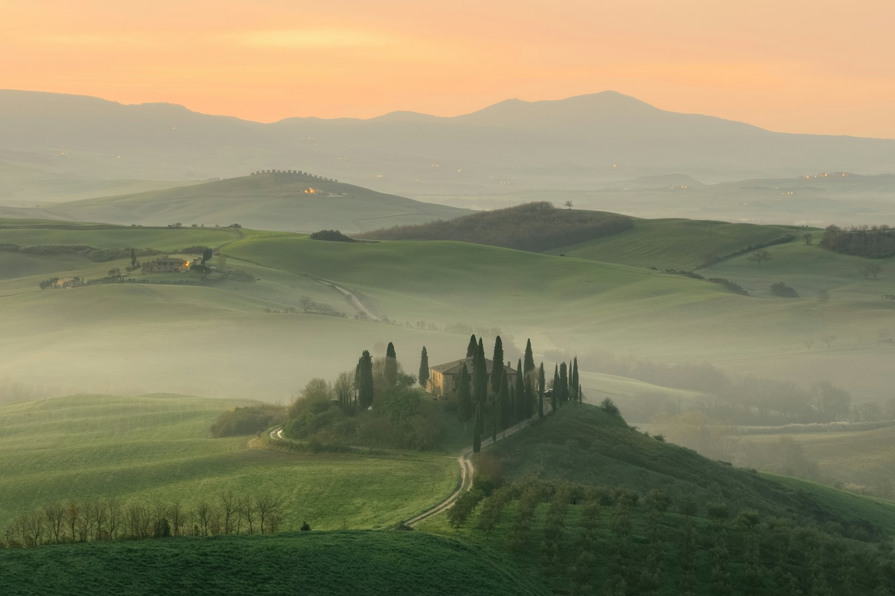

Lake Como
Lakeside villas and apartments in historic palazzi. Life is organised around the ferry.
- Airport
- Milan Malpensa, about one hour
- Look out for
- Lake access, parking, boat mooring


We search, check and negotiate on your side only. From the first call to the notary, in English, Italian, German or French.
Write your briefLakeside villas and apartments in historic palazzi. Life is organised around the ferry.

Stone farmhouses, olive groves, hill towns where everyone knows the land registry by heart.

Chalets and apartments for two seasons: skiing in winter, trails in summer.

Coloured villages, terraces over the sea, homes reached on foot by stairs and lanes.

Complete the sentence: that is your brief. It reaches us as written, so we call you already knowing where to start.
A video call to understand how you want to live: seasons, budget, family, work.
You need an Italian tax code and bank account to buy. We arrange both early, so nothing slows you down later.
Portals, local agents and homes not publicly for sale. You receive a reasoned shortlist.
Two or three days on the ground, with us. Or by video, if you are far away.
A surveyor checks that the house matches the land registry and permits, the energy certificate and any mortgages.
A written proposal, with conditions that protect you if the checks reveal problems.
The binding agreement and the deposit, with translation and a clear timeline to completion.
Signed before the notary, with an interpreter if needed. Or by power of attorney, if you cannot travel.

A first call to understand if Italy is right for you, and which part of it.
Book a call Altrove is a made-up name for this concept. Photos: Unsplash.